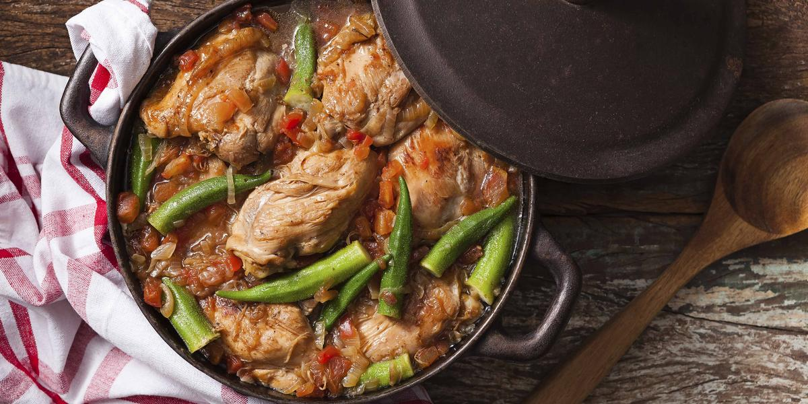

Receita de Frango com quiabo

INGREDIENTES
• 10 sobrecoxas de frango
• 200 ml de óleo
• 01 folha de louro
• 02 cebolas picadas e fritas
• 03 tomates sem peles e sementes
• 500 ml de caldo de galinha
• cheiro-verde picadinho
• 01 kg de quiabos
• 03 dentes de alho amassados
• 01 colher (sopa) de vinagre
• água e suco de limão
• sal e pimenta a gosto
• 03 dentes de alho amassados
PORÇÕES
Serve 10 pessoas
TEMPO DE PREPARO
50 minutos
PASSO A PASSO
1. Limpe e lave as sobrecoxas de frando com água e limão.
2. Perfure com um garfo, em ambos os lados e tempere com sal, pimenta e alho amassado.
3. Coloque óleo em uma panela grande, deixe aquecer e frite os pedaços de frango, virando de vez em quando para dourar.
4. Cozinhe os tomates com o caldo de galinha e reserve.
5. Em outra panela, coloque óleo, aqueça e refogue o alho.
6. Junte os quiabos, bem limpos, com as pontas cortadas e frite mais um pouco.
7. Adicione o vinagre e mexa de vez em quando.
8. Adicione no frango a folha de louro, e deixe fritar mais um pouco.
9. Frite as cebolas e adicione ao frango.
10. Depois de bem fritos, junte o caldo de galinha com os tomates e o cheiro verde picado.
11. Os quiabos depois de fritos, devem ser escorridos e colocados em uma travessa.